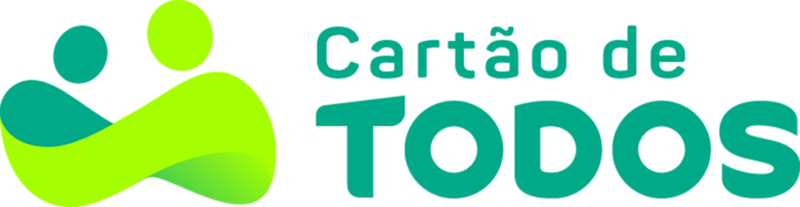
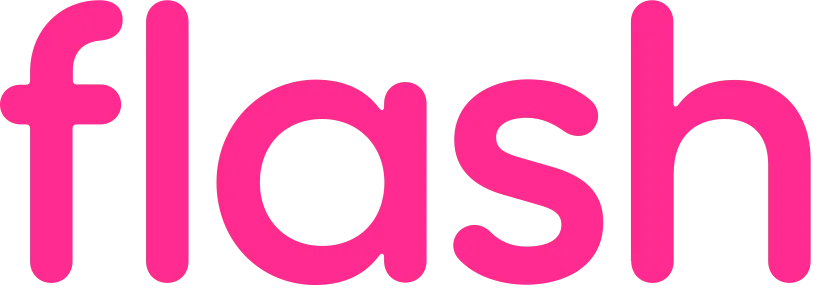
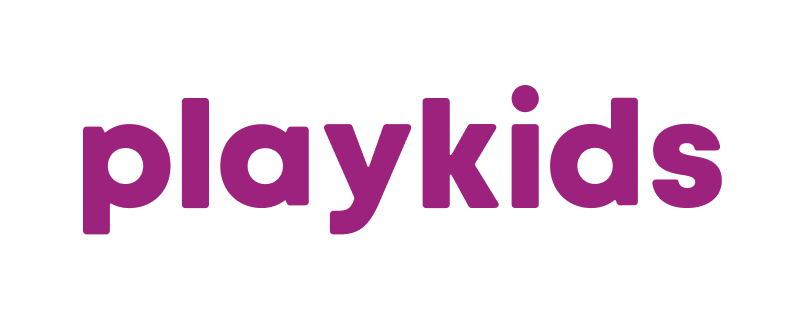
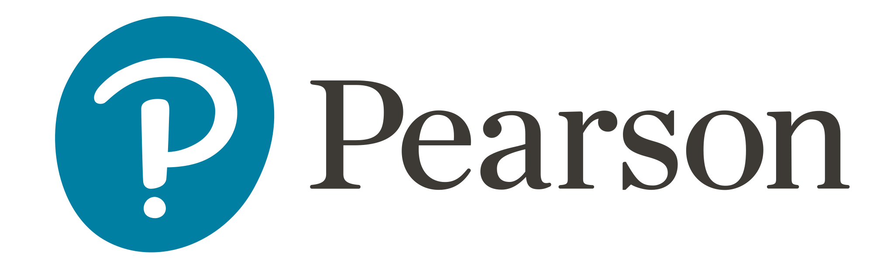

About me
I've been a Product Manager for over 8 years, but what really drives me is technical curiosity and delivering real value. I've navigated everything from B2B to B2C (Fintech, Edtech, Conversational AI) and have built more than 7 products completely from scratch (0 to 1).
I don't just stay in the realm of theory: I use AI in my daily workflow to validate hypotheses at lightning speed—testing ideas with Claude Code, AI Studio, Replit, or Emergent. I have a strong technical foundation and leverage backend tools (with a special affinity for Firebase) to prototype and structure systems that go from concept to launch seamlessly.
My background ranges from leading products responsible for 80% of a business unit's revenue at the world's largest education company to building superapps that impacted millions of users through PLG strategies. I speak the same language as Engineering—direct and detailed—and my product decisions are grounded in deep data analysis using Amplitude, Mixpanel, Metabase, Databricks, and more.
Companies I've worked with
-

-

-

-

What i'm doing
-
Product Management
Leading products end-to-end as a Specialist / Group PM — from strategy and roadmap to delivery.
-
PM Builder
Building applications hands-on and validating hypotheses with fast, real-world experiments.
-
Continuous Learning
Endlessly curious — always reading, taking courses, and exploring new ideas and technologies.
-
Music
Off the clock, I love listening to music — it fuels my focus, creativity, and everyday mood.